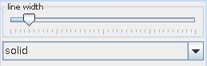

ISOLINES
The isolines module creates a series of contour lines of given constant values of a 2D field. The contour lines are colored by the level value. The selected component must be scalar.
Input data
The input is a regular or irregular 2D field.
Output data
The output field is an irregular field of isolines, a 2D geometry object and a 3D geometry object of the field.
Computation parameters

The isoline component drop down list defines the component to compute the isolines for. The list includes only scalar components. By default the first component is used.
A slider allows to adjust the approximate number of isolines to be drawn. The lines are evenly spaced between the minimum and maximum levels. If check box on the right hand side is on the user can change minimum, maximum and current value.
Presentation parameters
Presentation tab contents are described in the common interfaces section unter the Presentation Panel entry.
There are two parameters which are especially important for lines.
The line width slider allows to adjust the width of the isolines.
A drop down menu allows to choose between different line styles solid, dashed, dotted, dashdot. The default line style is solid.